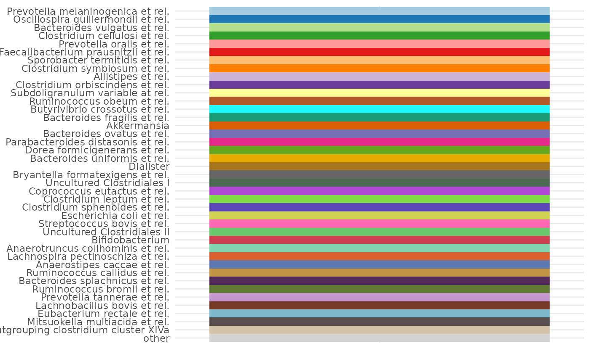
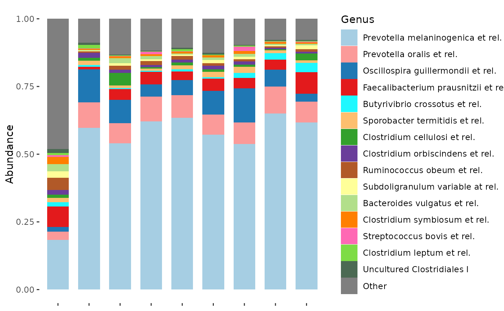

Makes a named palette vector from your phyloseq dataset considering overall abundance to assign colours (or some other sorting)
Usage
tax_palette(
data,
rank,
n,
by = sum,
pal = "brewerPlus",
add = c(other = "lightgrey"),
...
)Arguments
- data
phyloseq or psExtra
- rank
taxonomic rank name or "unique"
- n
number of colours / taxa (not including "other")
- by
tax sorting method for tax_sort e.g. sum
- pal
palette name from distinct_palette function
- add
name = value pairs appended to end of output, or NA for none
- ...
other args are passed to tax_sort
Examples
library(ggplot2)
data(dietswap, package = "microbiome")
myPal <- tax_palette(dietswap, rank = "Genus", pal = "brewerPlus", n = 40)
myPal %>% tax_palette_plot() # just to check the palette

# plot one subset of data
dietswap %>%
ps_filter(nationality == "AFR", timepoint == 1, sex == "male") %>%
comp_barplot(
tax_level = "Genus", n_taxa = 15,
bar_outline_colour = NA, bar_width = 0.7,
palette = myPal, label = NULL
)

# plot a different subset of data (top taxa differ but colours are the same)
dietswap %>%
ps_filter(nationality != "AFR", timepoint == 1, sex == "male") %>%
comp_barplot(
tax_level = "Genus", n_taxa = 15,
bar_outline_colour = NA, bar_width = 0.7,
palette = myPal, label = NULL
)